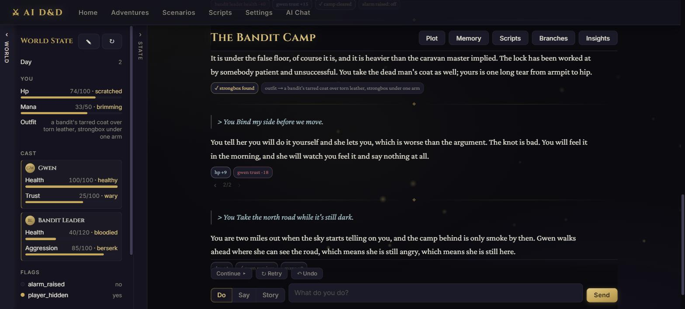
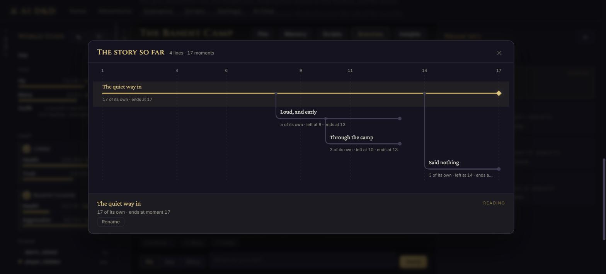
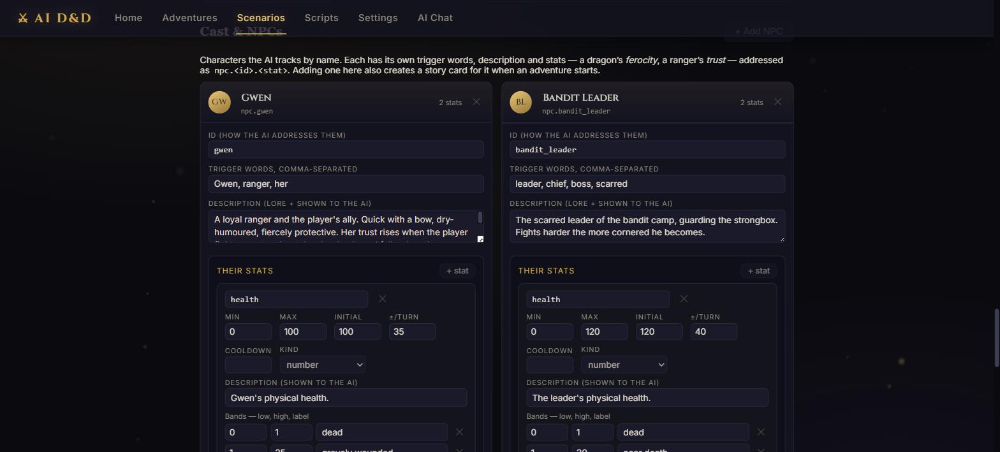
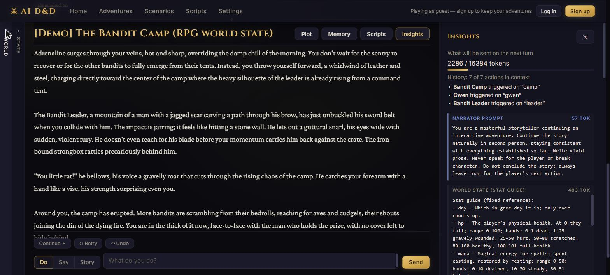
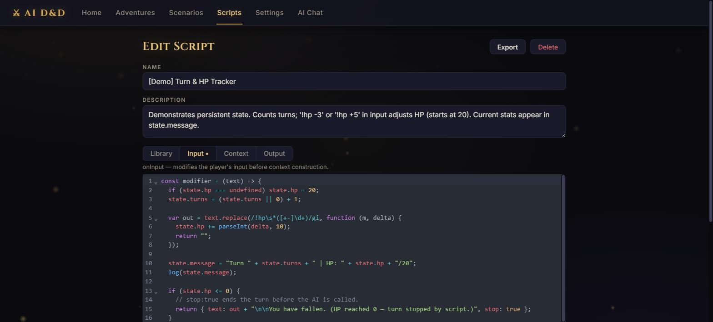
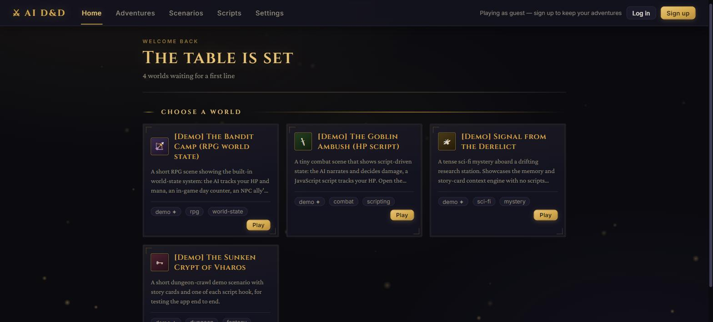

Open-ended adventures narrated by an LLM — with an engine that keeps the numbers honest.
Create a world, play it in second person, and let the model improvise the story while a Python referee enforces what's actually true: hit points, an ally's trust, a raised alarm, a quest milestone. Bring your own model, or play the demo with none.
No sign-up, no API key. Hosted on a free tier that sleeps — the first load takes ~30–60s to wake.

‹ 2/2 ›
under a turn steps between the takes it has.Four things a plain "talk to a model" app doesn't do.
Any turn can hold more than one take. Stepping between them is free — the story below simply empties, and the server is told nothing. Writing below a take that isn't the live one is what makes a branch, and a branch stores no turns of its own: it records where it left its parent and borrows everything above that. Twenty forks cost 1.007× the page load of the same story flat. Switch lines and the world state, the script scoreboard and the cooldown clocks all come back to what that line left.

A scenario declares stats, flags, milestones and a named cast. Each turn the model appends the changes
it thinks happened — and the engine clamps them to range, enforces per-turn caps and cooldowns, keeps
counters monotonic and milestones sticky, then strips the machine-readable block out of the prose.
Word-labelled bands (40–60: minor damage) are what make the model reliable at it.
No dice, no scripting required.

Every turn stores exactly what was sent to the model. Open Insights on any action to see each context component, what it cost in tokens, and why it was there — including which trigger word pulled in each story card and the similarity score behind each retrieved memory.

The three familiar hooks — onInput, onModelContext, onOutput —
with shared persistent state and a worldEntries API, executed in an embedded
quickjs sandbox. Scripts written for AI Dungeon import and work, and there's a CodeMirror editor in the app.

The modern AI Dungeon memory system: AI-generated memories every few actions, a running story summary, and embedding-based retrieval that pulls an old-but-relevant fact back into context when it matters. Undo and retry roll the world state back to a per-action snapshot rather than only rewriting the text. Every story stays where you left it, and the home page opens on its most recent line.

Player input goes through the script pipeline, into a token-budgeted context, out to whichever model you configured, and back through the referee.
player input
→ onInput script modifier
→ assemble context: [narrator prompt] + [world state + stat guide] + [AI instructions]
+ [plot essentials] + [story summary] + [retrieved memories]
+ [triggered story cards] + [history along this branch, token-budgeted]
+ [author's note] + [player action]
→ onModelContext script modifier
→ snapshot context (Insights)
→ provider adapter → AI (streamed)
→ extract + referee the world-state delta block, strip it from the prose
→ onOutput script modifier
→ store & renderThe parts that were measured rather than guessed at.